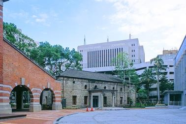

南門工場
🚂📦📦總督府於1897年規定鴉片專賣，1899年建造專賣局臺北南門工場，為製造及試驗樟腦、鴉片等兩大專賣品的重要生產基地，1901年改名南門工場，1931年改名為臺北南門工場，是日本時代臺灣唯一的公營樟腦加工廠。戰後於1952年改稱臺灣省樟腦煉製廠、1956年改名為臺灣省樟腦廠，1967年開放民營後停工廢廠，1974年起陸續處分廠區土地，東側撥交中央銀行、北側撥交財政部、南側撥交臺開信託等單位興建大樓。
🚂📦📦現僅存樟腦倉庫（以下稱紅樓）、物品倉庫（以下稱小白宮）、四百石貯水槽及一段工廠紅磚圍牆，因由財政部做為辦公空間而保存，面積縮減至今日規模，不及原廠區八分之一。